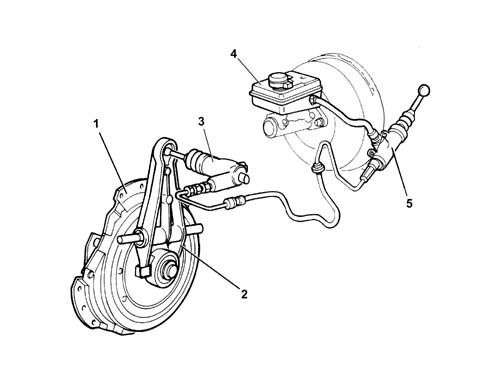

COMPOSITION
- Path
- Descriptions > 18 CLUTCH UNIT > COMPOSITION
- Kind
- system description
- Applies to
- all engines; all production periods
- Interactive page
- https://sloeber94.github.io/elrnDB-fUlss/en/#/179006627
Applies to: all engines; all production periods
The system consists of:
- a clutch drip tray with diaphragm springs (1);
- a clutch operating cylinder (2) fastened to the gearbox;
- linkage (3) operating the thrust bearing;
- a reservoir (4) shared by the braking and clutch systems;
- a clutch pump (master cylinder (5) fastened to the pedals assembly that compresses the oil;
- a pipe connecting the pump and the clutch operating cylinder;
- a thrust bearing;
- a clutch plate;

- 1. Clutch plate
- 2. Clutch operating cylinder
- 3. Linkage
- 4. Brake/clutch fluid reservoir
- 5. Clutch pump